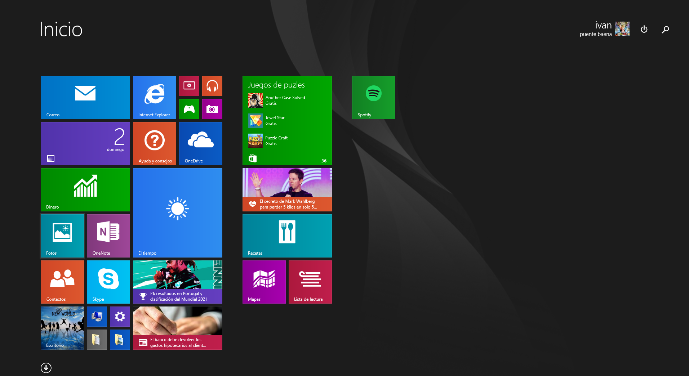

Caracteristicas de Windows 8.1
interfaz de usuario
En esta versión del sistema operativo de Microsoft La interfaz Metro UI, también conocida como Modern UI0.
Esta interfaz, basada en un sistema denominado «mosaicos vivos», se impuso en un primer momento sobre el escritorio tradicional en Windows 8.
¿Qué llevó a Microsoft a apostar por Metro UI?
Jacob Miller, diseñador UX de Microsoft que trabajó en Windows 8, Según Jacob en la creación y diseño de Windows 8 Fue creado para 2 grupos los avanzados y los casuales quienes estos últimos son quienes solo consumen contenidos y por
ello se opto por una interfaz simple y alejada del escritorio tradicional

Requerimientos Minimos
- Procesador: 1 gigahercio (GHz) * o más rápido con compatibilidad con PAE, NX y SSE2
- Memorias: 1 Gigabyte (GB) (32 bits) o 2 GB (64 bits)
- Espacio en el disco duro: 16 GB (32 bits) o 20 GB (64 bits)
- Tarjeta gráfica: Dispositivo gráfico Microsoft DirectX 9 con controlador WDDM
Versiones de Windows 8.1
- Windows 8.1 RT
- Windows 8.1
- Windows 8.1 Pro
- Windows 8.1 Enterprise
Inicio
atras
Siguiente